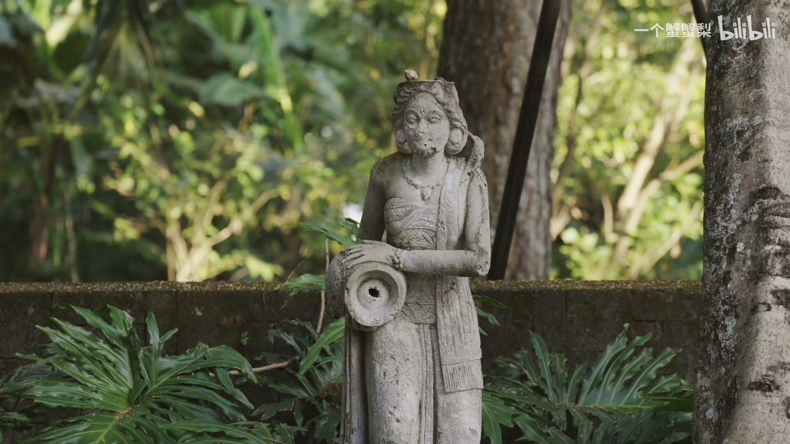
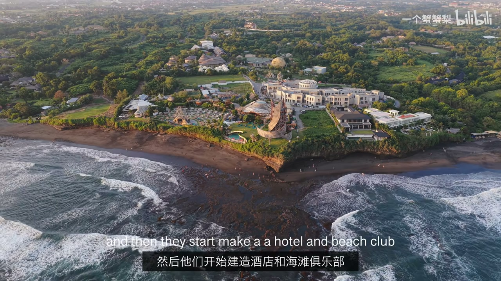
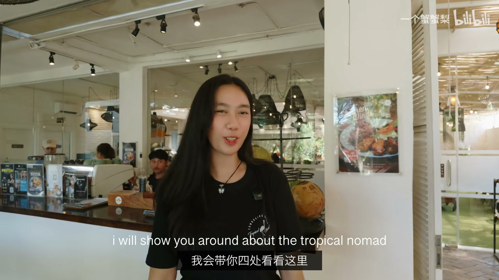
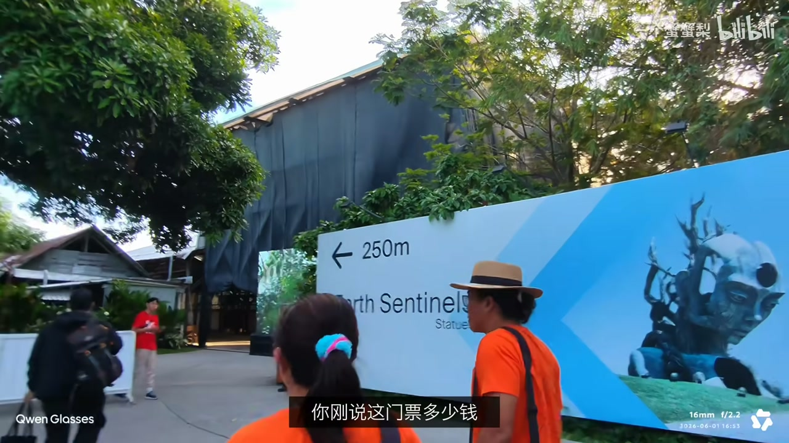
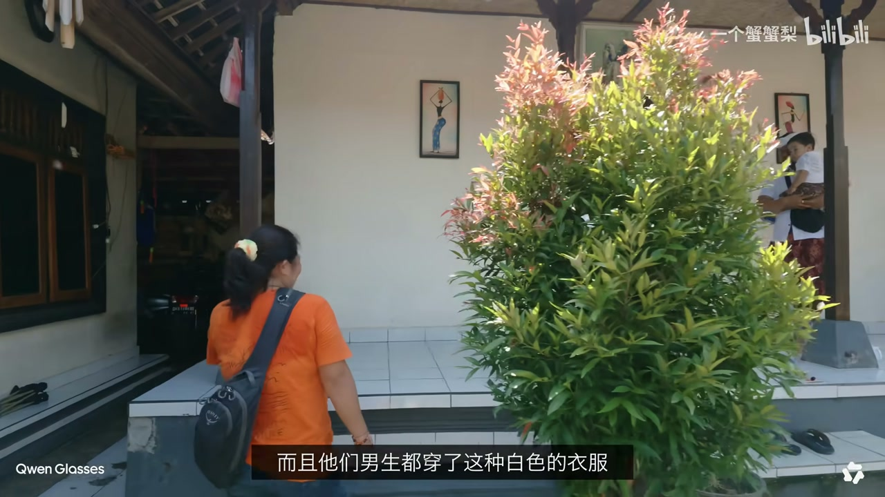
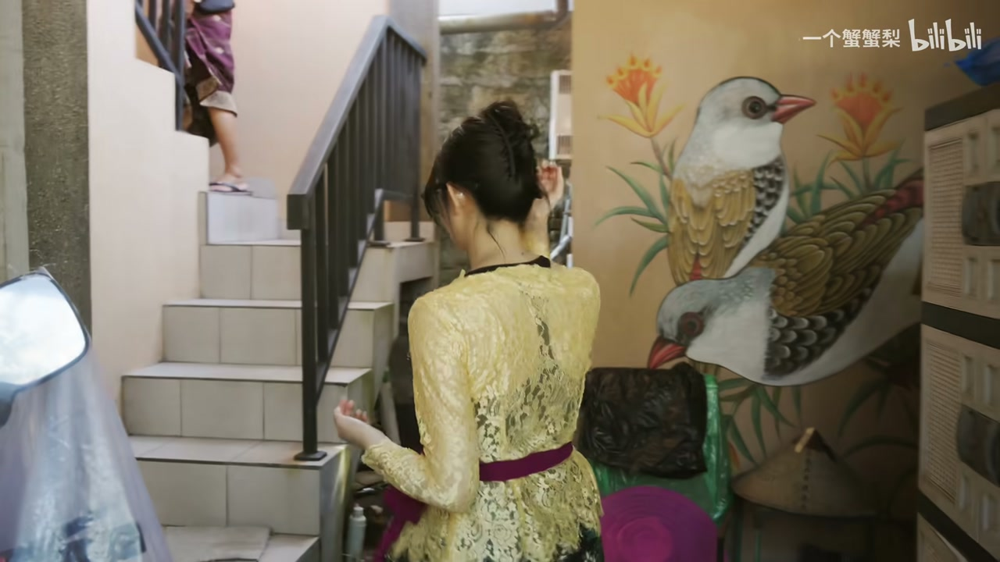
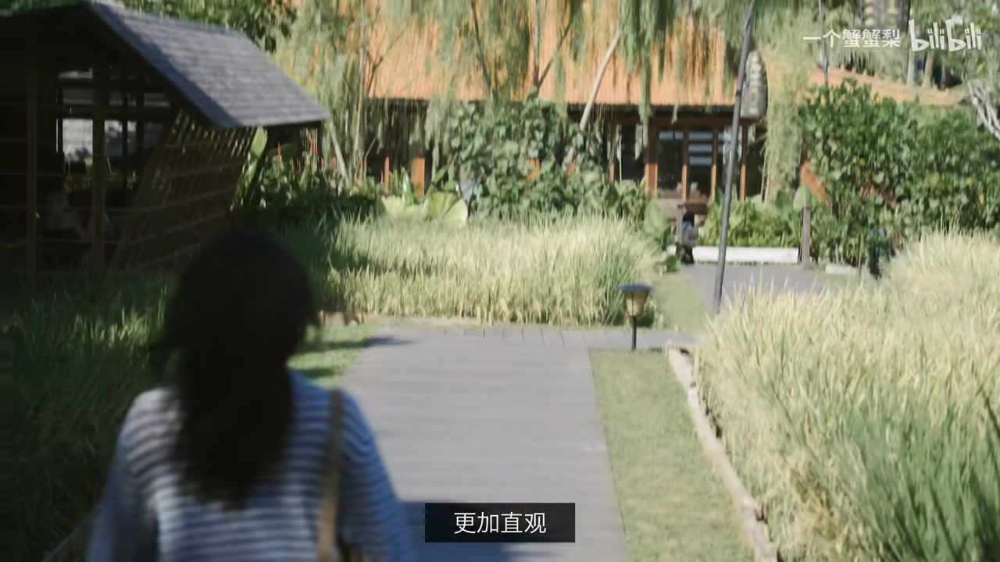

开场：按暂停键
00:00又是《邂逅世界》——“我老觉得我得给自己按个暂停键，可我就是按不下去”，所以这一次来巴厘岛：一方面放短假，另一方面看看这里到底是不是工作生活完美的平衡点。
00:49这次带了一个特别伙伴——千问 AI 眼镜 SE，陪我看世界。
01:08一出门就看到锦鲤（井鲤，色彩多样，寓意吉祥），大家赶紧许愿。

数字游民的狂欢：仓谷 Canggu
02:00今天要去的地方叫仓谷（Canggu），知道它是因为那边有很多数字游民——好奇仓谷到底是什么样的地方，为什么这么多数字游民会来这里。
03:14Naya 带我们参观 Tropical No.1 共享办公空间：24 小时开放，有来自世界各地的远程工作者——很多人一边在巴厘岛生活一边经营事业，早上冲浪、白天办公、傍晚再去看日落。
03:43随机采访正在办公的人：Dika（来自万隆）、菲蒂（28 岁来自尼日利亚）等——“在仓谷你可以轻松地与人交谈闲逛，即使不同背景不同文化也很容易”。
05:49有意思的是他们大多认为——生活、派对、什么都可以。



岛民的虔诚祈祷：家庙 Odalan 仪式
07:41最近好像碰到他们这边有个什么节日——离开伯伯家后，被邀请到另一户正在举办庆典的人家：男生都穿着白色衣服，人很多。
10:32原来是巴厘岛家庙（Odalan），每 210 天才会举行的一次重要仪式：这一天分散在各地的家族成员都会尽量赶回来，一起祭拜神明和祖先、感谢庇佑。
10:45院子里有好多准备好的供品，博主也跟着体验制作canang sari 小花篮——从选花到摆放都有讲究，不同颜色的花朵分别对应不同方位的守护神明。
10:57对于巴厘岛人来说，信仰从来不只是庙宇里的仪式，而是早已融入了每天的生活。


AI 眼镜 SE：翻译 / 导航 / 识物估价
11:18跟随屋主人参观她的画——画作细节超丰富，融合印尼本土艺术与现代绘画，回应生态议题；问价：4000 美元。用 AI 眼镜估算：风格类似乌布传统织井画，淘宝约 2155-2555 元。
12:44用 AI 眼镜3D 导航到餐厅：“完全不用打开手机，就能实时看到自己的位置和路线，而且是浮在眼前的 3D 立体画面，和真实道路叠在一起”。
13:39纪念品商店：识物估价——巴龙面具（巴厘岛很有名，代表善良正义的森林之王），巴掌大的木雕面具约 5 万印尼盾。“我逛了一圈下来，问他什么都知道，尤其价格猜得特别准”。

金巴兰日落：按下暂停键
14:35金巴兰海滩以超美的海上日落闻名，被评为全球十大最美日落之一。
14:57从下午一直拍到太阳落海，眼镜“居然还活着”——因为独有的近腿换电，不用担心续航。
15:06“此时此刻也不想拿起相机工作了，就想静静地坐着，看太阳一点一点掉进海里。那个我在上海怎么也找不到的暂停键，好像就这么被按下了。倒不是巴厘岛有多神奇，只是有的时候换个环境，看待世界的视角似乎就完全变了。”